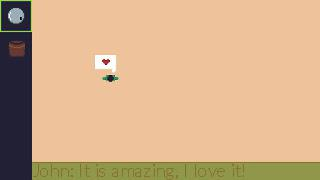
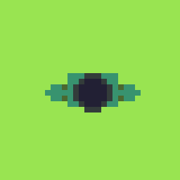
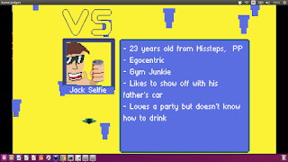

To bite more than you can chew: Another Ludum Dare 37 dev story of missteps
So, earlier this month happened this popular event on the indie game dev community, LDJAM, basically you have a theme and 72 hours to finish an entire game based on it. This time around, the theme was “One Room”.
I thought to myself: “OK! I got this!”
No I didn’t…
Presenting ROOM JUDGE(working title) - And how an apparent concrete idea can go wrong with lofty sense of scale and complexity…
The idea: Making a game where you as the player would furnish the room and then, be judged from it. Inspired by The Sims’ original concept(A furnishing game, on which the sims played pretty much the same roles as the judges of my game).
 |
| mockup of the UI |
{kind=link}
But for me the game was not about furnishing, it was more about how those judges would react to the decoration. I thought a lot about its mechanics and was sure I could have made something good out of it. Even the graphics(the thing I suck the most) were coming nicely. The bird’s-view perspective was also to make things simpler to draw and animate.
 |
| The first of 5 judges |
{kind=link}
As you can pretty much get from the title, this was too much for me to chew.
{kind=link}
{kind=link}
- Although most of the graphics were static, the sheer quantity I had to
drawn took me a lot longer than I thought originally.
This was a big planning error. It was not the biggest, but ultimately killed the project.
The very first 24 hours were dedicated to the graphics alone, I generally start with the engine, test, tweak and then move to the graphics(sometimes doing the music first), but as I had everything I thought I needed written on my tablet the night prior, I thought I could start by the worst part for me.
The problem is, during the second day, early in the morning I was starting to see that, to make the game work as a game, mainly to be fun as I envisioned, I would have needed a lot more time to tweak the engine. At the state it was, while working, it simply wasn’t fun.
 |
| The idea of a VS Screen and an intro kinda like a fighting game stuck into me. I also am guilty of having a lot of fun making the characters personalities and wasting precious time that should have been used first on the engine. |
{kind=link}
So, by mid-sunday I was in a dire spot, realizing the mistakes I made since the very begining, and everything kinda went downhill from there.
The lesson here is: You’re never as ready as you think you are in bringing a project to life. Be reasonable with your minimal-viable-product.